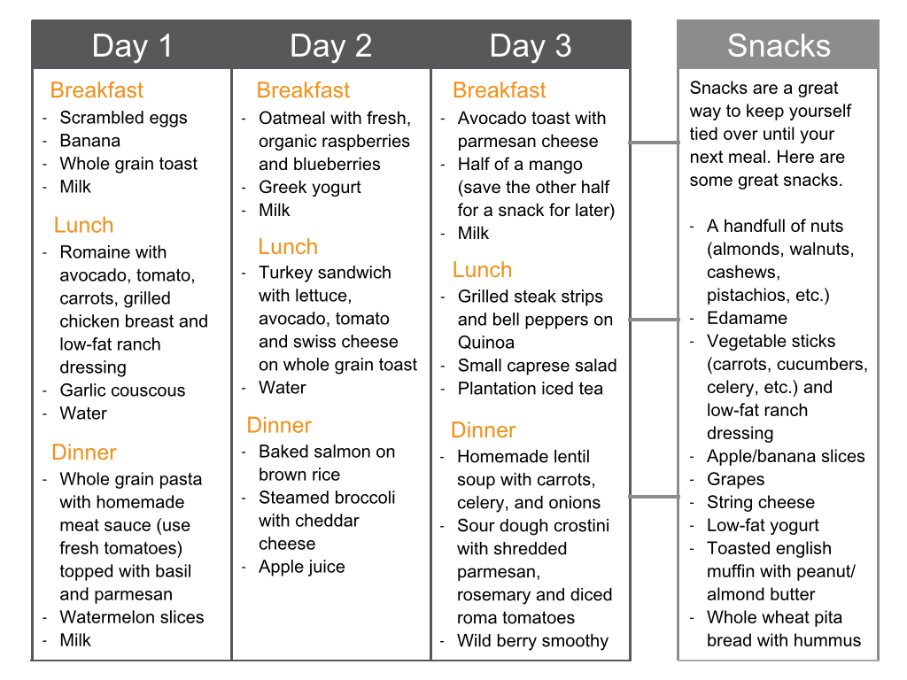
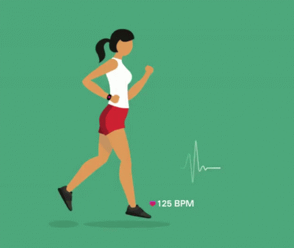
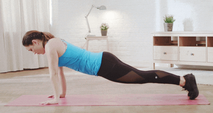
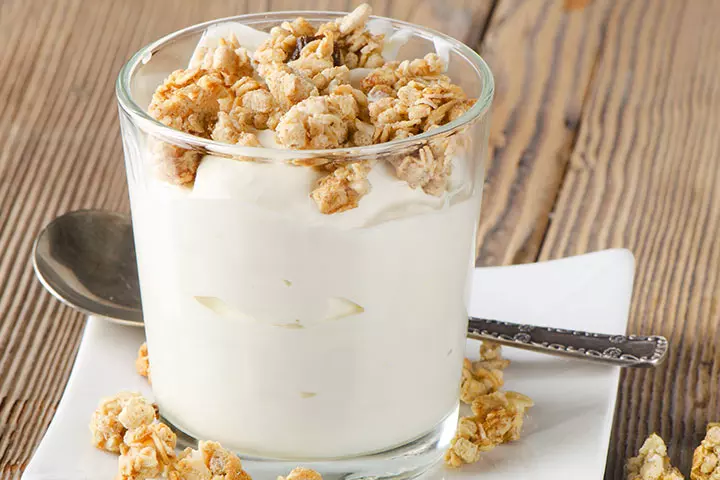

click hear for Information:
diet plain
REGULAR DIET ROUTINE
Follow this diet regularly,it helps you to increase your health and manitin a good healthylife

EXERCISES

- RUNNING
- It Prevents Disease For women, running can actually help to lower your risk of breast cancer. It can also help reduce the risk of having a stroke.
- You Might Lose Weight Running is one of the best forms of exercise for losing or maintaining a consistent weight.
- Running Boosts Your Confidence Not all of the benefits of running are physical. Running can provide an noticeable boost to your confidence and self-esteem.
- It Relieves Stress Stress can actually cause a number of health and mood problems. It can also diminish appetite and sleep quality.
- Running has the Power to Eliminate Depression
- PUSHUPS

- Pushups are one of the most basic yet effective bodyweight moves you can perform because of the number of muscles that are recruited to perform them.
- Start in a plank position. Your core should be tight, shoulders pulled down and back, and your neck neutral.
- Bend your elbows and begin to lower your body down to the floor. When your chest grazes it, extend your elbows and return to the start. Focus on keeping your elbows close to your body during the movement.
- Complete 3 sets of as many reps as possible.
- BUPEERS

- An exercise we love to hate, burpees are a super-effective, whole-body move that provides great bang for your buck for cardiovascular endurance and muscle strength.
- Start by standing upright with your feet shoulder-width apart and your arms down at your sides.
- With your hands out in front of you, start to squat down. When your hands reach the ground, pop your legs straight back into a pushup position.
- Jump your feet up to your palms by hinging at the waist. Get your feet as close to your hands as you can get, landing them outside your hands if necessary.
- Stand up straight, bringing your arms above your head, and jump.
- This is one rep. Complete 3 sets of 10 reps as a beginner.
PROTIEN RICH FOOD
FOOD PLAY THE MAJOR ROLE TO MAINTAIN HEALTHY LIFE
HIGH PROTEIN FOOD FOR TEEN
- YOGERT

- Yogurt doesn't sound like a good idea? Well, it is an excellent source of protein. A pack of yogurt contains about 11 grams of protein.
- BEANS

- How do you get your teen to try beans? For one, tell her that one cup of dry beans contains about 16 grams of protein. Use your creativity and make beans a staple in her diet.
- Regular intake of beans reduces the risk of breast cancer by 24%
How To Serve:
- Does your teen have a favorite soup or stew recipe? Just add some beans into the dish. You can also make a healthy, yummy salad using beans.